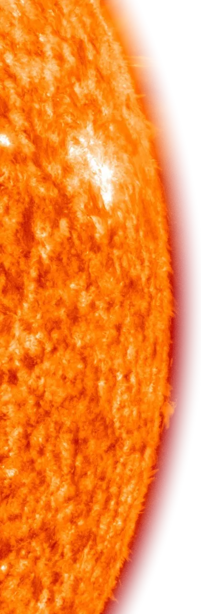
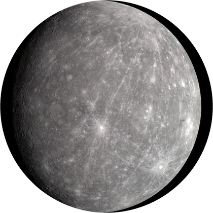
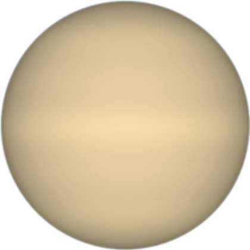
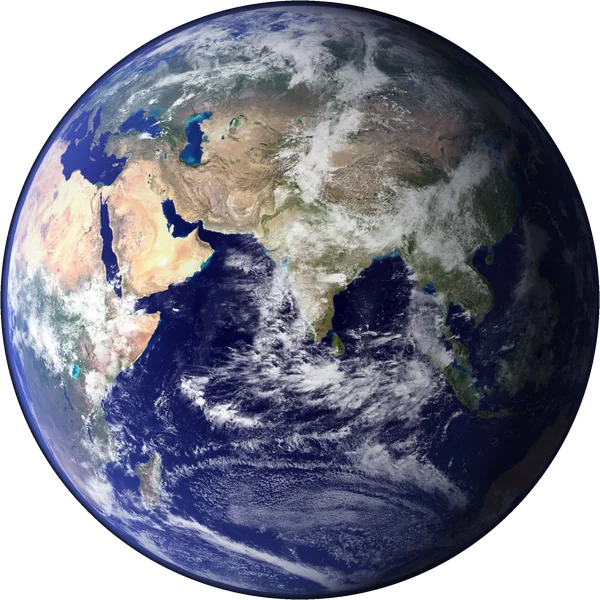
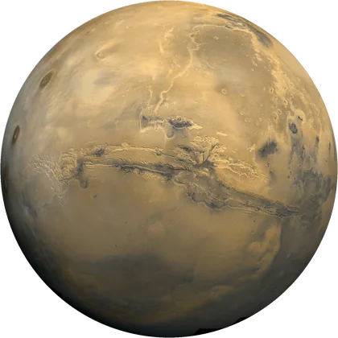
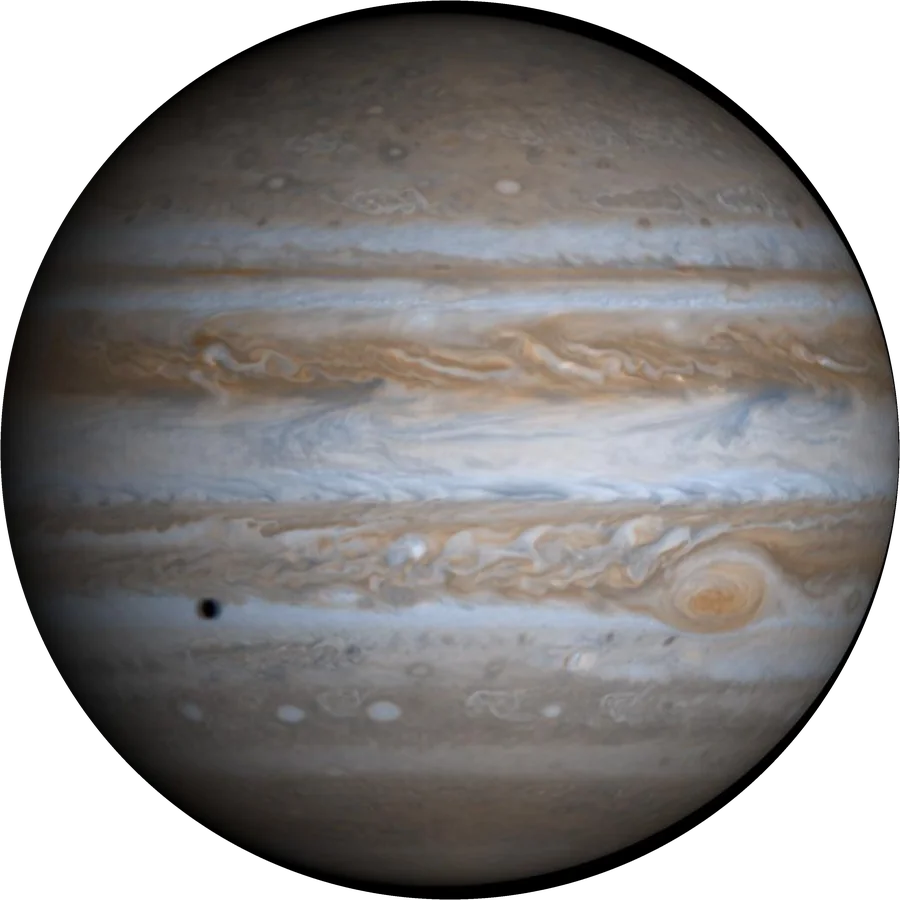
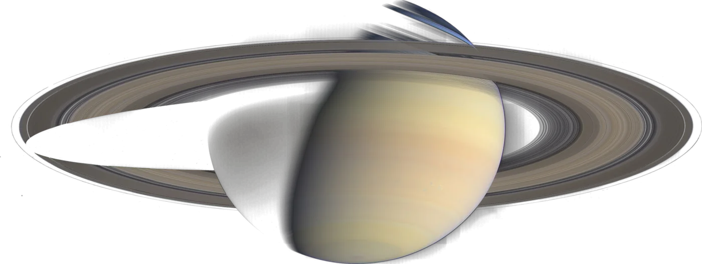
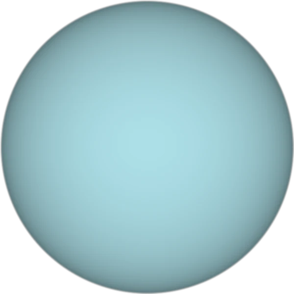
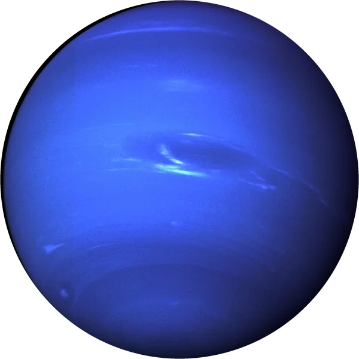

ระบบสุริยะ
The Solar System
บ้านของเราในอวกาศ
มีใครอยู่บ้าง?
ทุกดวงโคจรรอบดวงอาทิตย์
ที่ IAU รับรอง
ภาพ: ดาวเสาร์ ถ่ายโดยยานแคสสินี พ.ศ. 2547 · NASA/JPL/Space Science Institute (สาธารณสมบัติ)

ดวงอาทิตย์
พุธ
ศุกร์
โลก
อังคาร
ดาวพฤหัสบดี
ดาวเสาร์
ดาวยูเรนัส
ดาวเนปจูนลากแว่น ส่องดาวดวงเล็ก
ดาวเคราะห์ดวงเดียวที่เรารู้ว่ามีน้ำเป็นของเหลวบนผิวและมีสิ่งมีชีวิต
ดาวเคราะห์หินขนาดเทียบกันตามจริง (ระยะห่างไม่ได้ย่อตามจริง) · ภาพ: NASA, NASA/JPL, NASA/SDO, JHUAPL (สาธารณสมบัติ) · ภาพดาวพื้นหลังวาดโดย KruSlide
หิน หรือ แก๊ส?
ลากการ์ดบนสุดไปทางซ้ายหรือขวา
ดูขนาดและระยะห่างเป็นเบาะแส
ห่างดวงอาทิตย์ 5.2 AU
ห่างดวงอาทิตย์ 1 AU
ห่างดวงอาทิตย์ 30.1 AU
ห่างดวงอาทิตย์ 1.52 AU
ห่างดวงอาทิตย์ 9.54 AU
ห่างดวงอาทิตย์ 0.39 AU
ห่างดวงอาทิตย์ 19.2 AU
ห่างดวงอาทิตย์ 0.72 AU
ภาพ: โลก จากดาวเทียม Terra (MODIS) · NASA (สาธารณสมบัติ) · ภาพดาวเคราะห์: NASA, NASA/JPL (สาธารณสมบัติ)
ตอบบนจอ แล้วค่อยเฉลย
ดวงไหน ไม่ใช่ ดาวเคราะห์หิน?
ดาวพฤหัสบดีเป็นดาวเคราะห์แก๊ส ใหญ่ที่สุด อยู่ชั้นนอก ส่วนพุธ อังคาร และโลก เป็นดาวเคราะห์หินชั้นใน
ถ้าโลกเป็นลูกปิงปองกว้าง 4 ซม. ดาวพฤหัสบดี (กว้างกว่าโลกราว 11 เท่า) จะกว้างประมาณกี่เซนติเมตร?
อยู่ที่ดวงอาทิตย์99.8%
ครอบครัว
ของดวงอาทิตย์
- ดวงอาทิตย์ ดาวฤกษ์ดวงเดียว เป็นศูนย์กลาง
- หิน 4 ดวง ชั้นใน: พุธ ศุกร์ โลก อังคาร
- แถบดาวเคราะห์น้อย คั่นกลาง
- แก๊ส 4 ดวง ชั้นนอก: พฤหัสบดี เสาร์ ยูเรนัส เนปจูน
- ดาวเคราะห์แคระ เช่น พลูโต และดาวหาง
- ดาวเสาร์ (แคสสินี 2547): NASA/JPL/Space Science Institute
- ดวงอาทิตย์ (SDO, AIA 304 Å): NASA/SDO
- โลก (Blue Marble, Terra MODIS): NASA
- ดาวพุธ: NASA/JHUAPL/Carnegie Institution of Washington
- ดาวศุกร์ (มาริเนอร์ 10): NASA/JPL-Caltech
- ดาวอังคาร (ไวกิง 1): NASA/USGS
- ดาวพฤหัสบดี (แคสสินี): NASA/JPL/University of Arizona
- ดาวยูเรนัส ดาวเนปจูน (วอยเอเจอร์ 2): NASA/JPL
ทุกภาพเป็นสาธารณสมบัติของ NASA จาก Wikimedia Commons ภาพดาวพื้นหลังสไลด์ 2 วาดโดย KruSlide ข้อมูลขนาดและระยะ: NASA Planetary Fact Sheet
ภาพ: ดวงอาทิตย์ในแสงอัลตราไวโอเลตไกล 304 Å · NASA/SDO (AIA) (สาธารณสมบัติ)